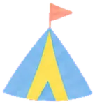

練習相手が、まわりにいない
実務経験で受けるので学校の仲間がいない、ひとりでできる練習を探した、という声（知恵袋 1件・note 1件）。
答えこの練習会では、受ける人どうしで役を交代するので、相手役と見てくれる人がそろいます。1回の流れへ
キャリアコンサルタント試験 面接の練習会（第34回に向けて）
このページで答える悩み面接（ロールプレイ）を、
本番の前に練習したい相手役と、見てくれる人がほしい

答え

サニー先生受ける人2人で、クライエント役を交代しながら練習するよ。オブザーバーの先生が見て、1人20分ずつふり返るんだ。
1人・1回5,000円（税込）・オンライン・20:00〜21:40（募集は2027年1月からの予定。曜日は決まったらお知らせします）
このページは、キャリアコンサルタント試験の面接を受ける人が、「本番の前に、相手と練習したい」という悩みを解決するためのページです。
ロールプレイは、ひとりでは練習しにくいもの。
相手役と、見てくれる人がいると心強いですよね。
このページでは、練習会の1回の流れ、参加費と時期、第34回の面接の日をまとめました。
申込み
2027年1月から、募集を始める予定です。
申込みのページができたら、ここでお知らせします。
申込みと支払いのきまり（予定）
参加費と時期
参加費
5,000円
1人・1回
いつ
1月から募集
（予定）
第34回の面接に向けて
どこで
オンライン
家から参加できます
時間
20:00〜21:40
（100分）
曜日は決まったらお知らせします
よくあるお悩み
練習相手が、まわりにいない
実務経験で受けるので学校の仲間がいない、ひとりでできる練習を探した、という声（知恵袋 1件・note 1件）。
答えこの練習会では、受ける人どうしで役を交代するので、相手役と見てくれる人がそろいます。1回の流れへ

人によって、言われることがちがう
指導する人ごとに評価が分かれて、自信をなくした、という声（知恵袋 2件）。
答え公表されている評価の区分は、協議会が「態度」「展開」「自己評価」、JCDAが「主訴・問題の把握」「具体的展開」「傾聴」です。どちらも、区分ごとに満点の40%以上が要ります。

オンラインの練習だけで、本番は平気？
講座が全部オンラインで、本番で緊張しないか不安、という声（note 1件・知恵袋 1件）。
答え面接は20分（ロールプレイ15分＋口頭試問5分）です。受ける人がキャリコン役になり、50分の面談の最初の15分を想定して行います。
くわしく 1
モヤンオブザーバーって、何をする人？

1人ずつ、練習→感想→ふり返り。役を交代して、2人とも練習します。
受ける人2人と、オブザーバー1人
もう1人は、クライエント役
そのあと役を交代して、もう1回
くわしく 2
第34回の面接は、2027年3月12日からです。
| 3/12 | 3/13 | 3/14 | 3/20 | 3/21 | 3/22 | 3/27 | |
|---|---|---|---|---|---|---|---|
| 協議会 | ● | ● | ● | ● | ● | ● | ● |
| JCDA | ● | ● | ● | ● |
| 協議会 | 2027年3月12・13・14・20・21・22・27日（人数で減ることあり） |
|---|---|
| JCDA | 2027年3月13・14・20・21日（協会が日を指定） |
出典：キャリアコンサルティング協議会・JCDA「試験日程」（2026年11月16日に確かめました）
学校や団体の面接の講座も、面接の1〜2か月前から開かれています。
モヤンひとりで練習するのと、何がちがうの？
サニー先生の解説ひとりで練習するより、相手がいると「聴く」の練習になるね。
講座の時期の出典：日本産業カウンセラー協会 北関東支部・LEC の講座案内（2026年11月16日に確かめました）
よくある質問
この記事を書いた人
キャリコン学びピクニック運営者
3児の母。2026年に、地域連携プラットフォームの養成講習（オンライン・土曜クラス）を修了し、第33回キャリアコンサルタント試験を受けました（合格発表は2026年12月16日）。
数字や日付は、公式の案内で確かめて、確かめた日をつけています。
出典
確認日はすべて 2026年11月16日
国・公的な案内・試験機関
面接の練習で困った人の声
学校・団体の講座案内